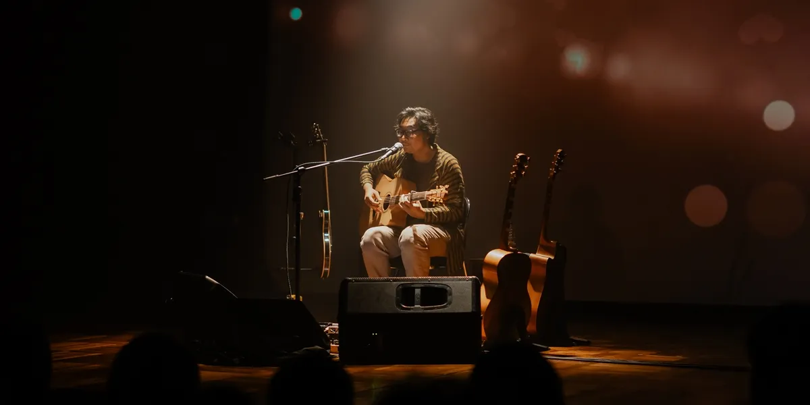
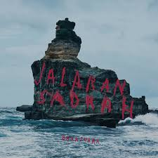

Deskripsi Mata Kuliah
Pemrograman Web 1
Program Studi: Sistem Informasi - Universitas Pamulang
Mata kuliah ini memberikan pemahaman dan keterampilan dasar dalam merencanakan, menganalisis, dan menciptakan perangkat lunak berbasis web yang tepat menggunakan HTML, CSS, dan JavaScript.
Katalog Lagu Terpopuler
Dengarkan musik favoritmu di mana saja, kapan saja.

Sesuatu di Jogja
Adhitia Sofyan
4:23

Hati-Hati di Jalan
Tulus
4:02

Terbuang dalam waktu
Barasuara
5:28
Untungnya, Hidup Harus Tetap Berjalan
Bernadya
3.55